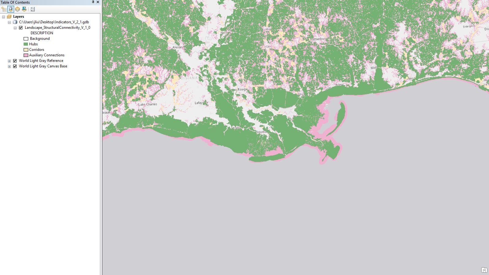

Chapter 4 Data Measure for Water Quality & Quantity
4.1 303D: Impaired Watershed Area
RESTORE Goal: WAQ – Priority Attribute: Water Quality Impairment
DEFINITION A percent attribute that stands for the proportion of impaired watershed within each hexagon. The watershed data are analyzed based on the 12-digit hydrologic unit code (HUC-12) level. Any HUC-12 watershed that contains an Environmental Protection Agency (EPA) 303(d) listed impaired waterbody would be considered impaired (EPA 1972).
Data Summary

Work Flow:
- Clip the impaired watershed boundary layer with hexagon boundaries.
- Perform spatial join to calculate the proportion of each hexagon that contains an impaired watershed.
Utility Function: Higher the better
Hex Aggregation: Sum
Area of Interest Aggregation: The project area of interest is composed of multiple hexagons, the score for the area of interest is the summed score from the hexagons inside the polygon
- Threshold: Linear
- Min: 0; Max:1, Mean: 0.36; Std. Deviation: 0.47
4.2 Hydrologic Response to Land Use Change
RESTORE Goal: WAQ – Priority Attribute: ?
DEFINITION A percent attribute that stands for the change in peak flow during a 24 h 1 rainfall event of an HUC-12 watershed at its currently developed state relative to its hypothetical pre-developed state. The pre-developed state was created by replacing all anthropogenic land cover with the most dominant natural land cover found within the HUC-12 watershed. All land cover used in this measure came from the National Land Cover Database (NLCD) 2016 (Yang et al. 2018).
Data Summary
Data Source: NLCD 2016 (Yang et al. 2018); SSURGO (USDA 2018); NHDPlusV2 (McKay, Bondelid, and Dewald 2019)
- Links:
Description: [This measure is not listed in [https://docs.google.com/document/d/1TxAx6cmrE8rzjpnYfDM00dhn2RnmocyGF5uZ2ZxAvcg/edit#heading=h.j7r8iz583xq8]]
Unit: Percentage
Work Flow:
- Perform spatial join of the vector data with hexagon boundaries.
- Compute mean of percent change in peak flow values within each hexagon.
Utility Function: Higher the better
Hex Aggregation: Sum
Area of Interest Aggregation: The project area of interest is composed of multiple hexagons; the score for the area of interest is the maximum score from the hexagons inside the polygon.
Threshold: Linear
4.3 Stream Abundance
RESTORE Goal: WAQ – Priority Attribute: ?
DEFINITION A numerical attribute that quantifies the length of streams (km) found within a hexagon. Stream data came from the National Hydrography Dataset Plus Version 2 (NHDPlusV2)-NHD Snapshot (McKay, Bondelid, and Dewald 2019).
Data Summary
Data Source: NHDPlusV2 (McKay, Bondelid, and Dewald 2019)
Link: NHDPlusV2
Description: [This measure is not listed in [https://docs.google.com/document/d/1TxAx6cmrE8rzjpnYfDM00dhn2RnmocyGF5uZ2ZxAvcg/edit#heading=h.j7r8iz583xq8]]
Unit: Kilometer
Work Flow:
- Clip the NHD Snapshot stream vectors to the hexagon boundaries.
- Calculate the length of all streams within each hexagon.
Utility Function: Higher the better
Hex Aggregation: Sum
Area of Interest Aggregation: The project area of interest is composed of multiple hexagons; the score for the area of interest is the maximum score from the hexagons inside the polygon.
Threshold: Linear
References
EPA. 1972. “Clean Water Act.” Washington, DC, USA: EPA.
McKay, L, T Bondelid, and T Dewald. 2019. “NHDPlus Version 2: User Guide 2012.” EPA. https://nctc.fws.gov/courses/references/tutorials/geospatial/CSP7306/Readings/NHDPlusV2_User_Guide.pdf.
USDA. 2018. “Soil Survey Staff Web Soil Survey.” Natural Resources Conservation Service. Washington, DC, USA: USDA.
Yang, L., S. Jin, P. Danielson, C. Homer, L. Gass, S.M. Bender, A. Case, C. Costello, J. Dewitz, and J. Fry. 2018. “ISPRS J. Photogramm. Remote. Sens.” A New Generation of the United States National Land Cover Database: Requirements, Research Priorities, Design, and Implementation Strategies 146. https://scholar.google.com/scholar_lookup?title=A+new+generation+of+the+United+States+National+Land+Cover+Database:+Requirements,+research+priorities,+design,+and+implementation+strategies&author=Yang,+L.&author=Jin,+S.&author=Danielson,+P.&author=Homer,+C.&author=Gass,+L.&author=Bender,+S.M.&author=Case,+A.&author=Costello,+C.&author=Dewitz,+J.&author=Fry,+J.&publication_year=2018&journal=ISPRS+J.+Photogramm.+Remote.+Sens.&volume=146&pages=108%E2%80%93123&doi=10.1016/j.isprsjprs.2018.09.006.